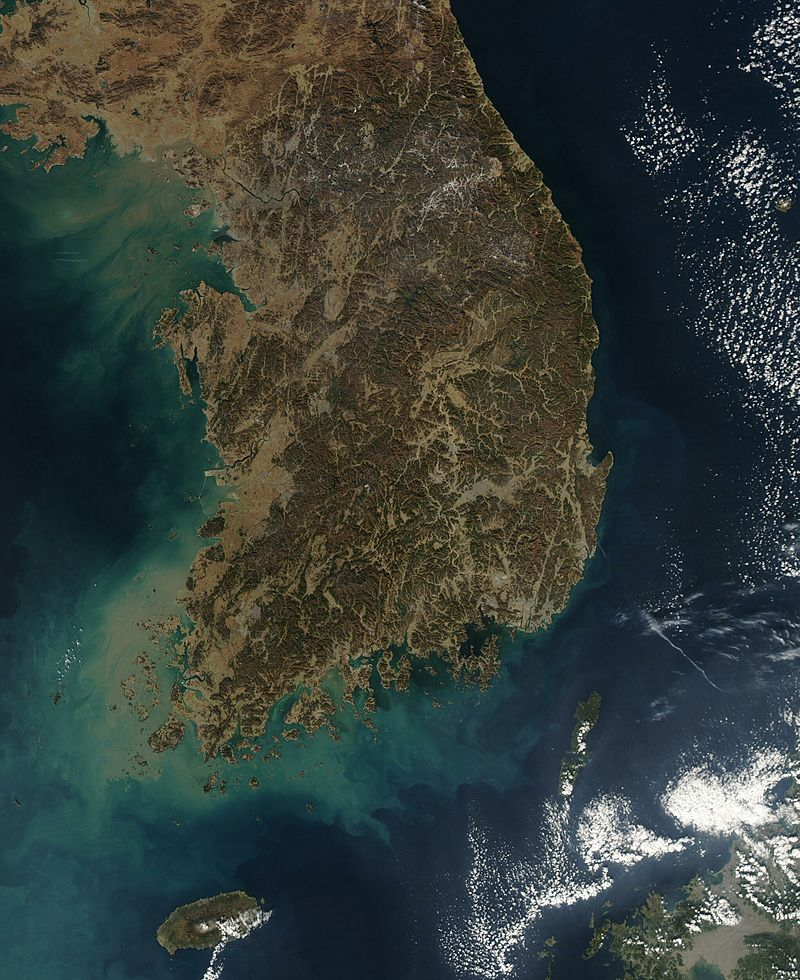

크리에이티브 코리아


География
История
K-pop
BTS
Интересни забележителности
Най - добрите университети в Сеул (Южна Корея)
ГЕОГРАФИЯ
https://bg.wikipedia.org/wiki/%D0%AE%D0%B6%D0%BD%D0%B0_%D0%9A%D0%BE%D1%80%D0%B5%D1%8F
Южна Корея заема южните части на Корейския полуостров в източната част на Азия. Граничи по суша само със Северна Корея на север, като поради напрегнатите отношения между двете държави от двете страни на границата има четирикилометрова демилитаризирана зона. Разположена в края на полуострова, Южна Корея опира в няколко морета – Жълто море на запад, Японско море на изток и Корейския проток и Източнокитайско море на юг. Общата площ на страната е 100 210 km².
Столица : Сеул (на корейски: 서울) е столицата на Южна Корея, най-големият град и икономическият, политически и културен център на страната. С население надхвърлящо 9 милиона души, Сеул е сред най-големите градове в световен мащаб. Сеулският национален столичен район с население от почти 24,5 милиона души е вторият най-голям метрополен регион в света и обхваща столичния град, агломерацията Инчон и почти цялата провинция Кьонги-до. Почти 50% от населението на Южна Корея живее в столичната метрополия, от които 1/4 са в самия Сеул. Столичният град е разделен от широката близо километър река Хан-ган (한강) (514 km). В средата на северната част на града се намира планината Нам-сан (남산) (262 m).